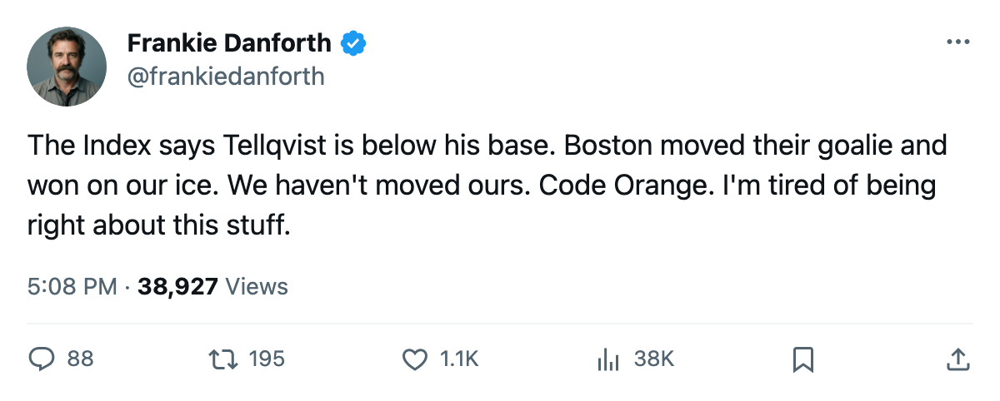
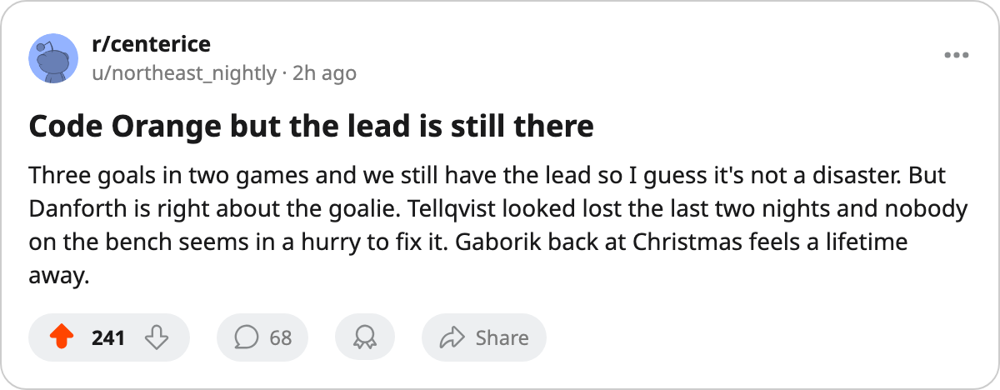

TOR
TOR BOS
BOSDANFORTH: Code Orange, 3 goals in 2 games, and a lead that evaporates at this rate
The cushion is 3 points. Boston has a game in hand. Tellqvist sits in the crease at -5 on the Index and nobody's moving.
 Frankie DanforthColumnist · Queen City Telegram
Frankie DanforthColumnist · Queen City Telegram
Code Orange

The Panic Meter reads Code Orange.
On 13 November I wrote that we sat 6 points clear of Boston with two games in hand. Four days and two losses later, the lead is 3 and the Bruins own one more game than we do. That game has no name on the schedule yet because it's a home game against a team that hasn't visited yet. Point is: Boston can make this a 1-point race without Toronto doing anything wrong.
We scored 3 goals in the Detroit and Boston games. Sixty-one in seventeen before that. When the goals stop, the points stop, and the lead shrinks by 2 for every night you forget how to finish.
Mikael Tellqvist73 is -5 on the Development Index. He reads 73 against a base of 77. The Index says his form is below his own talent level, and he has dressed in three of the last four.  Roberto Luongo95 won the Conn Smythe in June, and his slot list is empty and he is not dressed. Maxime Ouellet86 sits at G2 with 4 starts and no wins in the sample the sheet provides.
Roberto Luongo95 won the Conn Smythe in June, and his slot list is empty and he is not dressed. Maxime Ouellet86 sits at G2 with 4 starts and no wins in the sample the sheet provides.
Boston's coach moved his netminder mid-week. Raycroft went from scratched to G1 in one transaction and beat us Saturday. I am not asking for a trade. I am asking for a look.
The fourth line remains what it has been since training camp:  Jamie Lundmark81 at 3.3 minutes a night with 0 points in 11 games, and Tim Gardener75 at 3.1 with 0 in 10. I logged this in 2004. Nothing has changed.
Jamie Lundmark81 at 3.3 minutes a night with 0 points in 11 games, and Tim Gardener75 at 3.1 with 0 in 10. I logged this in 2004. Nothing has changed.
 Mats Sundin92 has 13 points in 19 games at 23.4 minutes. Petr Chlup87 has 15 at 20.7. I will grant that the teenager has answered the second-centre question. He has answered it while the team drops 4 points in 2 nights, which is not the same thing.
Mats Sundin92 has 13 points in 19 games at 23.4 minutes. Petr Chlup87 has 15 at 20.7. I will grant that the teenager has answered the second-centre question. He has answered it while the team drops 4 points in 2 nights, which is not the same thing.
The calendar tells you when you run out of time
Toronto hosts Philadelphia on Friday, visits Ottawa on Saturday, and gets Washington on Sunday. Five points from those three games puts us back at 8 clear of Boston before the Bruins play their 19th. Three points from those three means Boston wakes up on 27 November one behind.
I have been saying since October that the fourth line is a tax and the second centre is a question. The second centre answered himself in 19 games. The fourth line is still a tax. And now the lead is 3 points with a team behind us that has won both games we played against them.
The only Leaf on the shelf is  Marian Gaborik99, $11.90M, back 25 December. Before that date, the team scores what it scores. The team just scored 3 goals in 2 nights.
Marian Gaborik99, $11.90M, back 25 December. Before that date, the team scores what it scores. The team just scored 3 goals in 2 nights.

